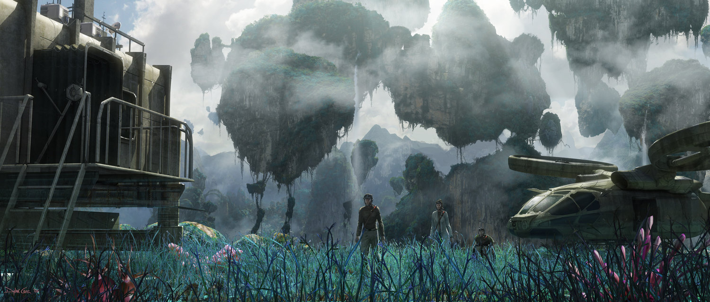

Olá! ou, como dizem os Na'vi, kaltxì si! Nós somos a Andromeda Centaurus Expeditions, conhecido pelo público como ACE. Por muitos anos sonhamos com a situação atual que hoje Pandora se encontra, um momento de paz e sincronia com a Terra. Nós da ACE temos o orgulho de ter participado da batalha por um momento como esse, e temos principalmente orgulho de nossas conquistas como empresa. Ao lado de muitos, apoiamos e investimos para que o povo Na'Vi fosse um povo aliado e não inimigos, e para que a exploração fosse o mais saúdavel possível, sendo lucrativo para ambos os lados. Nossa equipe é composta por cientistas, pesquisadores e amantes de Pandora, e fazemos o possível para que você ame tanto quanto nós esse planeta único e mágico.
O vale do Mo'ara foi uma das primeiras conquistas da ACE, um local onde os Na'Vi vivem em harmonia com os humanos, sem falar de sua imensurável beleza natural. Com um contrato assinado entre o Presidente da empresa e o Líder dos Omatikaia, o Vale do Mo'ara pode ser o lugar ideal para você que quer ficar mais próximo da cultura do povo Na'Vi
Com uma beleza inigualável, as montanhas Hallelujah é considerado por muitos um dos lugares mais bonitos e únicos de todo o planeta, já pensou como seria passar uns dias em pedaços enormes de terra flutuantes? podendo ter uma das vistas mais lindas já acessada pelo homem. A ACE, junto aos nativos, preparou o ambiente de forma ideal para aproveitarem o melhor de cada espaço.
O vale do Crepúsculo é o lugar ideal para os amantes da noite, de Noite temos Dia e de Dia temos Noite. Um lugar único onde a noite é iluminada pela beleza bioluminescente de Pandora, se você é um admirador da luz natural e ama um lugar extremamente sossegado para buscar paz esse com certeza é o lugar ideal pra você.
A Vila Vayaha é lar do povo Iknimaya, que cede o lugar para aqueles que querem ficar muito próximo de sua cultura. Com certeza uma aventura única te espera, porém, ao escolher a vila de Vayaha você precisa estar ciente que viverá o mais próximo possível dos Na'Vi, o que pode tornar uma estadia rádical. Para este lugar, apesar de sua beleza, é necessário atender os requisitos internos da Empresa.